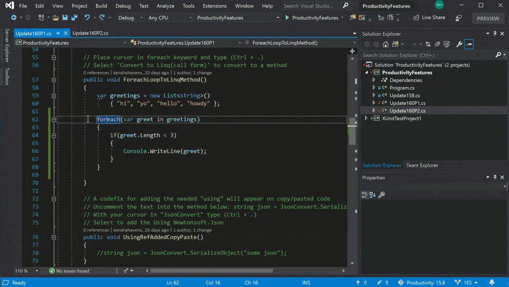

Visual Studio 2019
更快地进行代码编写。 更智能地执行操作。 使用同类最佳 IDE 创建未来。


✓改进了 C++ 文件的 IntelliSense 性能
✓使用多个常用仿真程序进行本地开发
✓简化了s解决方案资源管理器中的测试访问
✓IDE 中的s Git 管理和存储库创建
✓Kubernetes 支持现在包含在 Microsoft Azure 工作负载中
 开发
开发
分析
Debug
 测试
测试
协作
"部署"
编写没什么错误的代码
遇到困难时使用 IntelliSense 代码建议快速准确地键入变量。 无论导航到所需的任何文件、类型、成员或符号声明时的复杂程度如何， 都保持一定的速度。 使用建议操作（例如重命名函数或添加参数）的灯泡快速改进代码。
了解有关代码的详细信息
CodeLens 帮助你轻松找到重要见解，例如对代码所做的更改、这些更改的影响以及是否对方法进行了单元测试。 可一目了然地查看参考、作者、测试、提交历史记录和其他重要信息。

快速找到并修复 bug
借助 Visual Studio，可以使用断点和所需方法在要检查 bug 时暂停代码执行。 如果一步过长或遇到了意外的更改，可以回退到任何特定代码行，而无需重启会话或重新创建状态。

有效工作
轻松导航和组织测试套件，以便分析测试的代码量并立即查看结果。 立即了解所做的每个更改的影响，并让高级功能在你键入代码时对其进行测试。、 在错误发生时立即修复错误，并查看现有测试是否覆盖了新更改。

共享多个屏幕
无论语言或平台如何，都可以使用 Live Share 通过快速自然地协作来领导团队，以共同实时编辑和调试。 、 通过强制每个用户使用一致的编码样式的访问控制和自定义编辑器设置来个性化会话。

针对云进行构建
使用适用于常见应用程序类型和本地 Azure 仿真程序的模板快速启动和运行，而无需 Azure 帐户。 还可以预配应用程序依赖项（例如 Azure SQL 数据库和 Azure 存储帐户），而无需离开 Visual Studio。 使用直接附加到应用程序的 Visual Studio 远程调试器快速诊断任何问题。

Visual Studio 工作负载
仅安装在 Visual Studio 中开发所需的工具和组件捆绑包
Web & cloud

ASP.NET和Web开发

Azure

Python

node.js
ASP.NET 和 Web 开发
使用 ASP.NET Core、ASP.NET (.NET Framework)、HTML/JavaScript 和包括 Docker 支持的容器生成 Web 应用程序
说明
最大限度地提高使用 ASP.NET Core 以及 HTML 和 JavaScript 等基于标准的技术开发 .NET Web 应用程序的工作效率。
使用 ASP.NET Core 中的 Razor 页面的网站
– 使用 ASP.NET Core MVC 生成 Web API
– 使用 ASP.NET Core SignalR 构建实时 Web 应用
Azure
用于开发云应用、创建资源以及生成包括 Docker 支持的容器的 Azure SDK、工具和项目
说明
轻松在 Microsoft 云上生成、测试、部署和管理可扩展的应用和服务。 安装后，在 Cloud Explorer 中查看资源、使用 Azure 管理工具创建资源、生成适用于 Azure Web 和云服务的应用程序，还能使用 Azure Datalake 工具执行大数据运算。
开发应用程序
– 在集成开发环境中将 ASP.NET Core 应用发布到 Azure
– 测试云服务的性能
– 调试已发布的 Azure 云服务
组件
– Azure 开发必备组件
– .NET Framework 4.x 开发工具
– .NET Core 2.1 开发工具
– ASP.NET 和 Web 开发工具
– 容器开发工具
Python
对 Python 进行编辑、调试、交互式开发和源代码管理
说明
支持使用熟悉的框架（包括 Django 和 Flask）构建 Python Web 应用程序，以及使用内置 Conda 和 IPython 支持构建的数据科学应用程序。
开发应用程序
– Python 应用程序
– Django Web 应用
– Flask Web 应用
组件
– 支持 CPython、virtualenv、venv 和 conda 环境
– 多种多样的编辑、IntelliSense 和代码理解
– 交互式 (REPL) 环境窗口
– 在开放的文件夹工作区中支持 Python
– 使用项目和项模板简化新建项目过程
– 分析和单元测试工具
– 使用 Miniconda 管理 Conda 环境
– Live Share
Node.js 开发
使用服务器端 JavaScript 运行时环境 Node.js 构建快速且可缩放的应用程序
说明
使用 Web 框架（如 Express）和前端框架（如 React）轻松构建 Node.js 应用程序。
开发应用程序
使用 Express 创建 Node.js 应用
使用 React 创建 Node.js 应用
将 Node.js 应用发布到 Azure 云
组件
– 项目模板
– npm 集成
– 交互式 (REPL) 环境窗口
– 本地和远程 高级调试
– 使用分析工具跟踪性能
– 单元测试支持
– TypeScript 集成
Windows

.NET桌面开发

使用C++的桌面开发

UWP开发
.NET 桌面开发
使用 C#、Visual Basic 和 F# 生成 WPF、Windows 窗体和控制台应用程序
说明
使用 Windows Presentation Foundation 或 Windows 窗体创建基于 Windows 的应用程序。此外，利用 .NET Framework 创建 Web 应用程序，以及创建可通过 Microsoft Store 发布的面向计算机或设备的客户端应用程序。
开发应用程序
– Windows Presentation Foundation (WPF)
– Windows 窗体
组件
– .NET 桌面开发工具
– .NET Framework 4.x 开发工具
– .NET 分析工具
– C# 和 Visual Basic 语言支持
– Entity Framework 6 工具
– IntelliTrace
– 实时调试器
使用 C++ 的桌面开发
使用所选的工具构建适用于 Windows 的新式 C++ 应用，包括 MSVC、Clang、CMake 或 MS Build
说明
C++ 桌面应用在控制台或窗口中运行。 利用强大的 MSVC 编译器和库工具集，或引入自己的生成工具，来完成作业。
开发应用程序
– 使用 C++ 构建传统的 Windows 桌面应用程序
– 使用 C++ 构建控制台应用程序
组件
– MSVC x64/x86 生成工具
– Visual C++ 核心桌面功能
– C++ 分析工具
– Windows 10 SDK
– 用于 Windows 的 C++ CMake 工具
– Google Test 测试适配器
– Boost.Test 测试适配器
– IntelliTrace
– 实时调试器
– Live Share
UWP 开发
使用 C#、VB、或（可选）C++ 为通用 Windows 平台创建应用程序
说明
生成面向 Windows 桌面、Xbox、HoloLens、SurfaceHub 和 Windows 10 loT 的应用程序。
开发应用程序
– 通用 Windows 平台(UWP)
组件
– Blend for Visual Studio
– .NET 本机和 .NET 标准
– Nuget 包管理器
– 通用 Windows 平台工具
– Windows 10 SDK
Mobile & gaming

使用.NET的开发

使用C++的移动开发

使用Unity的游戏开发

使用C++的游戏开发
使用 .NET 的移动开发
使用 Xamarin 生成适用于 iOS、Android 或 Windows 的跨平台应用程序
说明
使用 C# 和 XAML 生成完全本机的 iOS、Android 和通用 Windows 平台应用。 Xamarin 利用单种语言提供平台 API 和功能的完全访问权限，并允许与其他 .NET 平台共享代码库。
开发应用程序
– 使用 Xamarin.Forms 生成跨平台应用
– 使用 Xamarin.Essentials API 访问本机功能
组件
– Xamarin
– .NET Framework4.x 开发工具
– C# 和 Visual Basic 语言支持s
– Android SDK 安装
使用 C++ 的移动开发
构建适用于 iOS 或 Android 的跨平台 C++ 应用
开发应用程序
– Android 本机应用
– 导入 XCode 项目
– Android 和 iOS 上的 OpenGL ES 应用程序
组件
– Visual Studio C++ 核心功能
– Android SDK 安装
– Android NDK
– Apache Ant
– C++ Android 开发工具
使用 Unity 的游戏开发
使用功能强大的跨平台开发环境 Unity 创建 2D 和 3D 游戏
说明
创建游戏和交互式内容，并发布到 21 个平台，包括所有移动平台、WebGL、Mac、PC 和 Linux 桌面、Web 或控制台。
开发应用程序
使用高级调试体验开发
组件
– Visual Studio Tools for Unity
– C# 和 Visual Basic
使用 C++ 的游戏开发
以 DirectX、Unreal 或 Cocos2d 为后盾，利用 C++ 的强大功能生成专业游戏
说明
以 DirectX、Unreal 或 Cocos2d 为后盾，利用 C++ 的强大功能生成适用于 Windows、Xbox 和其他控制台的专业游戏。
开发应用程序
– Xbox Live 应用
– HoloLens 上的 UWP 应用
– Marble Maze
组件
– MSVC x64/x86 生成工具
– Visual Studio C++ 核心功能
– Windows 通用 C 运行时
– C++ 分析工具具
– Windows 10 SDK
– IntelliTrace
Other toolsets

数据存储和处理

数据科学和分析应用程序

Visual Studio 扩展开发

Office/SharePoint

使用C++的Linux开发

.NET Core跨平台开发
Visual Studio 使 Azure 开发变得更简单

扩展和集成
使用最常用的加载项轻松保持高效


Visual Studio 2019 发布视频

“Not your average”主题演讲

Visual Studio Big Wigs 现场问答

以更快的速度编写更出色的代码

简化梦想开发团队

消灭 bug 并提高代码质量

借助 GitHub 和 Azure DevOps 使 DevOps 上一个台阶

AI 注入中断

加速 C++ 开发

使用 Xamarin 进行跨平台 iOS 和 Android 开发

使用 Visual Studio 和 Azure 开启到云的旅程

使用 .NET Core 生成出色的 Web 应用

使用 Visual Studio for Mac 进行 .NET 开发的概述

优秀的开发人员编写出色的代码

包含所有内容！

你有 Visual Studio 订阅吗？ 现在要做什么？

利用 Visual Studio 开发 Python

使用 .NET Core 3.0 统一 Windows 桌面开发

Visual Studio 2019 使用 Unity 在游戏开发领域大显身手

在此 Visual Studio 2019 会话中联合所有容器和 Kubernetes 迷

.NET Core 3.0 的新功能

Visual Studio App Center 提供的移动应用和游戏 CI/CD

每个开发人员使用 ML.NET 和 Visual Studio 2019 实现机器学习和人工智能

借助 IoT 和 .NET Core 让应用程序快速“领先”

使用 Azure Sphere 和 Visual Studio 简化 IoT 开发